I am a second-year Computer Science + Media Arts student
at Northeastern University and an aspiring
Developer.
I like to craft immersive experiences that engage users through humor, wonder,
and curiosity. From animation and game design to programming and web development,
I love to incorporate personality and creative expression into my projects.
Currently, I am a Project Leader for the Northeastern Game Studio Club, where I
help manage short and long-term game development projects, collaborate with friends, and
mentor new game developers.
Next Stop: My Portfolio!
Roll the Dice is a puzzle strategy game in which players must navigate a maze whilst restricted in movement by the numbers on a die.
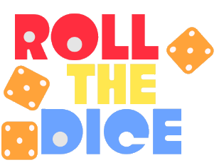

Roll the Dice was developed in under 48 hours by myself and a partner as an entry for the Game Maker's Toolkit 2022 Game Jam. We placed in the top 25% of over 6,000 entries.
We hadn't placed as high as we had hoped due to a game-breaking bug, but we were able to recognize our mistake and prevent future game jam submissions from suffering the same fate.
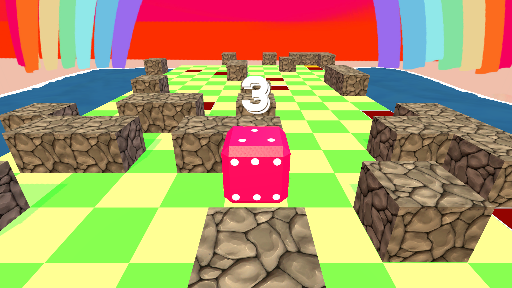
Download the (bug-free) game here: RollTheDice.zip
Find the source code here
8seconds.site is a web-based experience made to comment on addictive scrolling behaviors widely prevalent in many social media platforms.
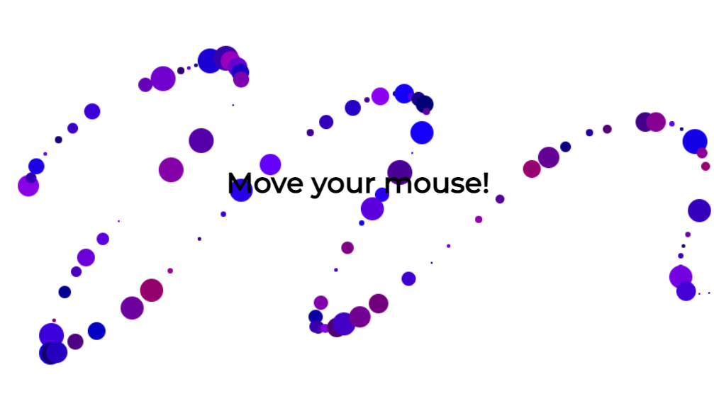
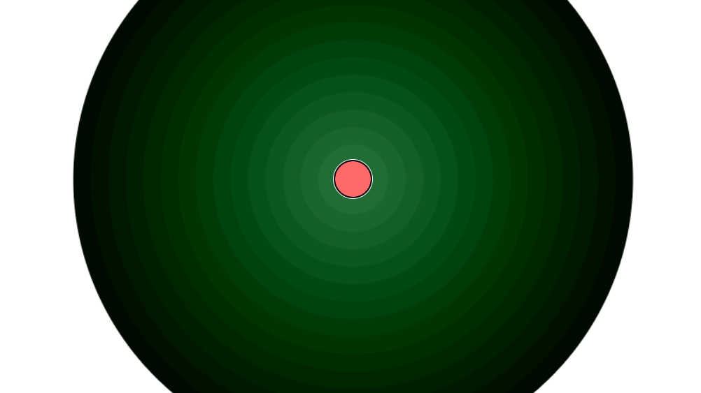
Offering a series of 8-second-long, meaningless activities, the web experience lures users down a rabbit hole of activities designed to satisfy a short attention span.
Upon completing the experience, users are shamed for how long they spent on the website in hopes of allowing users to recognize how long they spend indulging in mindless media.
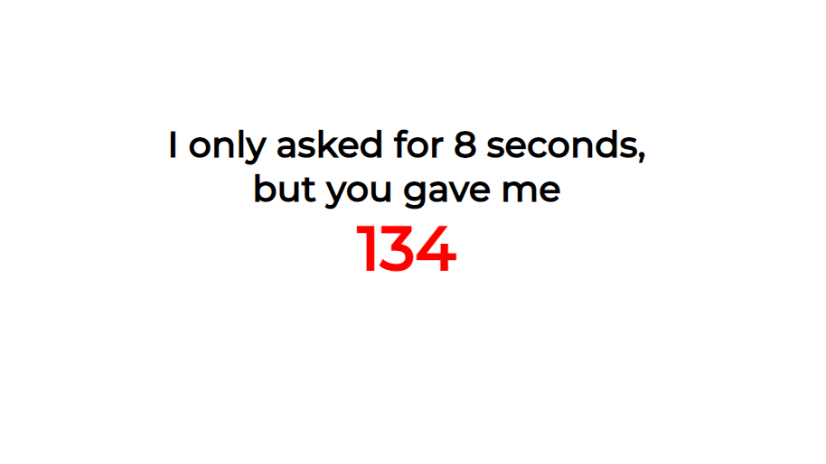
Read more about the experience here
Find the source code here
Developed by myself and a partner, this image processing program has the ability
to:
import image files of .jpg, .png, .bmp, and .ppm image formats
flip images vertically and horizontally
apply greyscale and sepia filters to images
blur and sharpen images
visualize color components of images
change the brightness of images
downsize images
export images to .jpg, .png, .bmp, or .ppm formats
The program utilizes a Model, View, Controller design pattern to ensure
program scalability and to provide an organized project structure that is optimal
for debugging.
Uses the JUnit testing framework to test all program functionality.
Executable .jar file
*Source code available upon request
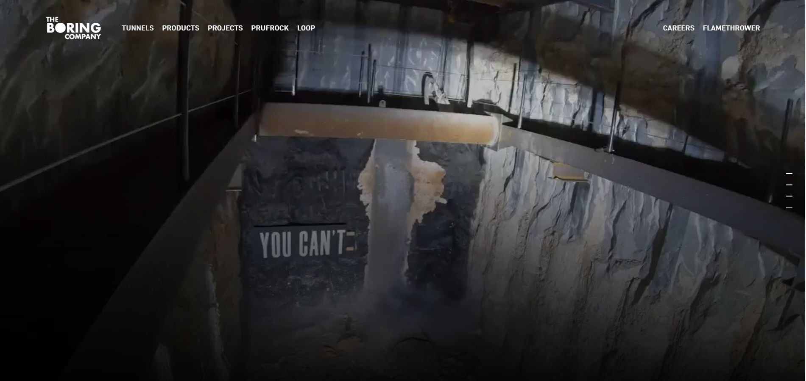
boringcompany.fun is a spoof website of Elon Musk's Boring Company website that was created to highlight the absurdities of Musk's proposed tunnel system.
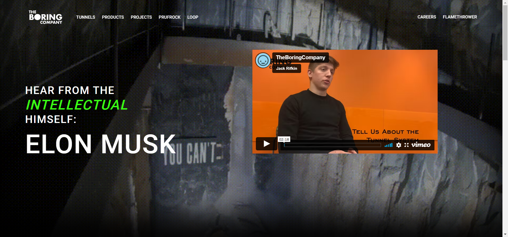
Following the design of the Boring Company's real website, my group members and I reworked the website to criticize the tunnel project using sarcasm and immitation.
All of the images and text used in the website are either altered or replaced with content that excessively praises Musk's "genius" to demonstrate how we found the tunnel project to be an inefficient, glorified reconstruction of existing public transit systems.
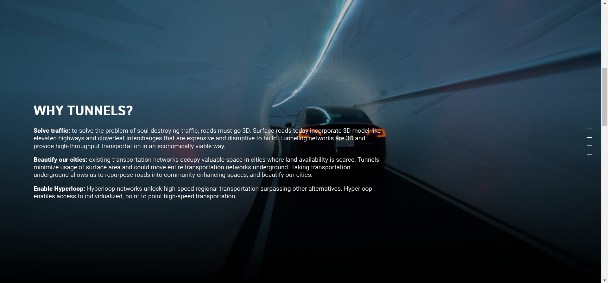
Because the source code of the Boring Company's website was not accessible, we remade the website from scratch, using a template for a parallax scrolling effect.
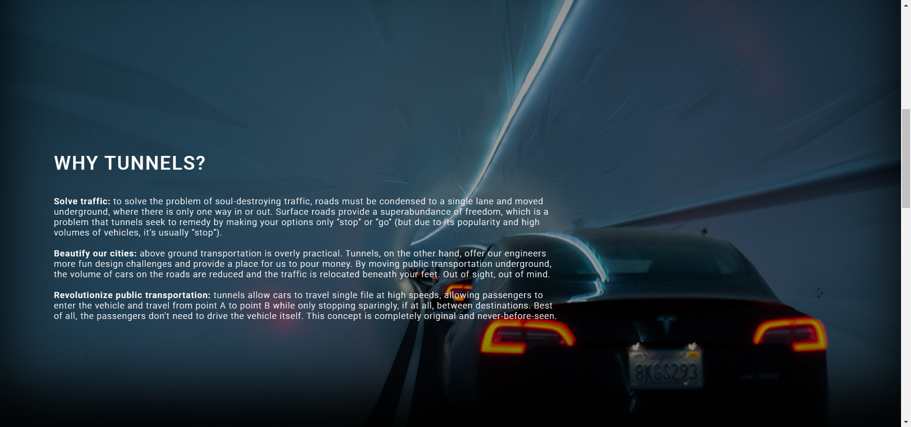
Find the source code here
The maze simulator is a program that generates random mazes and visualizes the solution to the generated maze.
When "r" is pressed, the program creates a minimal spanning tree using Kruskal's algorithm connecting all cells in the graph to represent a maze.
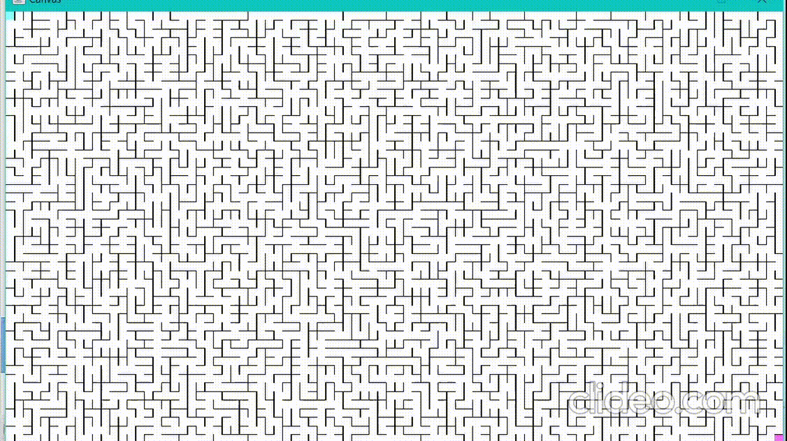
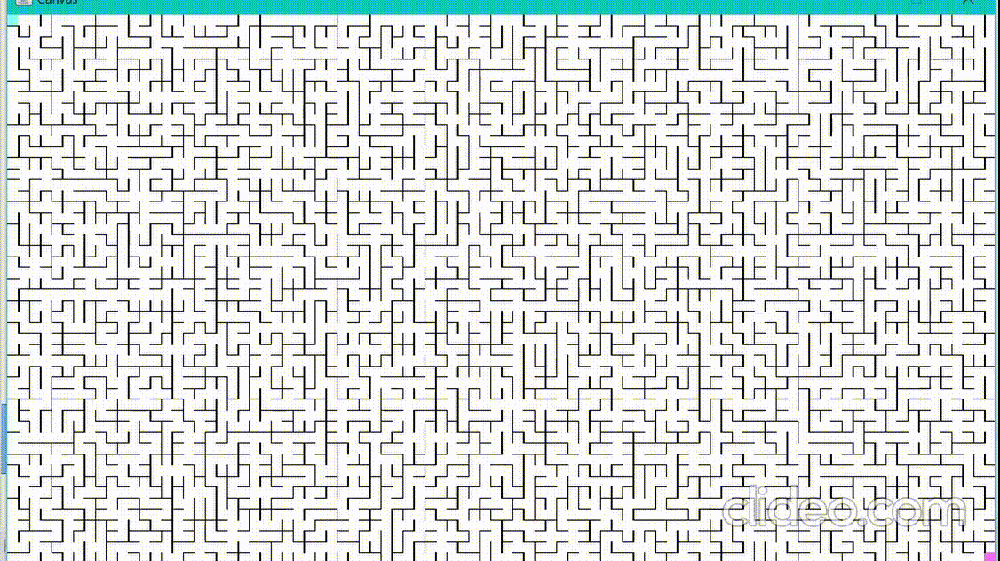
When "d" is pressed, the program executes and visualizes a depth-first search of the minimal spanning tree in order to find and visualize the path from the first cell to the last.
When "b" is pressed, the program executes and visualizes a breadth-first search.

*Source code available upon request